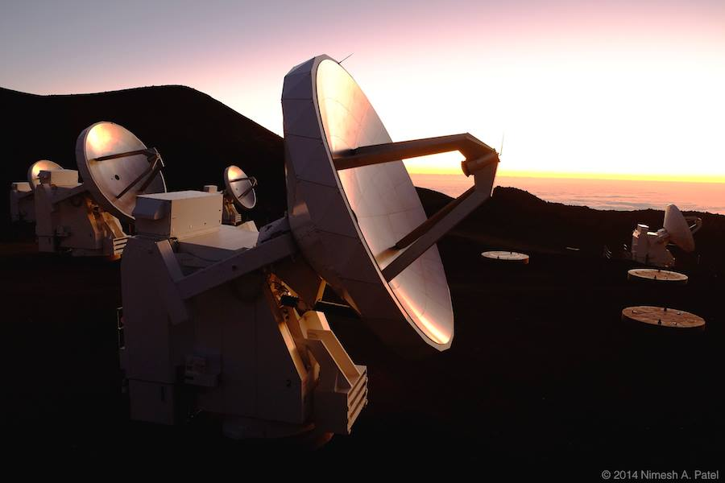

Predoctoral Fellowships
Launch Your Career at the CfA
Overview
he Smithsonian Astrophysical Observatory (SAO) offers a unique opportunity for graduate students to pursue all or part of their thesis research at the Center for Astrophysics | Harvard & Smithsonian (CfA). Since 1985, the SAO Predoctoral Program has hosted external graduate students from over 30 countries as well as from throughout the United States. With unparalleled resources starting with world-wide observing and space-based facilities, graduate students often report that being at the CfA accelerated the pace of their research. The CfA offers many opportunities to discuss and explore a wide range of career choices in astrophysics with over 300 scientists as well as over 200 fellowship recipients. The Program offers each participant input from a research review committee and numerous opportunities to develop and strengthen their presentation skills. Likewise, the Program strengthens collaborations between academic institutions.
Benefits to Students and Faculty
Home advisors are sent bi-annual or annual reports on student progress from the Director of the SAO Predoctoral Program. The Predoctoral Research Review Committee is in frequent contact with the home advisor providing updates on the participant's progress toward research objectives. Students and advisers also have the flexibility of extending their fellowships at any time.
Program Specifics
The SAO Predoc Program offers an opportunity to work side-by-side with scientists at the CfA for appointments as short as 6 months or as long as 5 years. SAO Predocs are mentored by a Predoctoral Research Review Committee comprised of 3 experts in the relevant research topic. Students meet regularly in an SAO Predoctoral Journal Club where they practice presentation skills before professional research scientists and their graduate student peers. The CfA promotes and organizes a series of professional development workshops throughout the year in addition to a daily array of seminars to meet the research needs of scientists at one of the most diverse centers for astrophysics research in the world.
Community
The CfA is located in Cambridge, Massachusetts – a diverse city with a thriving arts, science, and academic community.
Eligibility
Applicants must have completed preliminary coursework and examinations prior to the start of the SAO Predoctoral Program.
How to Apply
To initiate an application, the applicant must directly contact an SAO scientist in the research area of interest to obtain their consent to serve as a research advisor and potential sponsor of the prospective research project. Applicants must gain approval of the Department Head of their home institution, since degrees will be granted by the home institution. Program applications are initiated by the SAO scientist through an endorsement form uploaded to the application portal which generates a shared link for the applicant to submit the required materials.
Contact Us For More Information
Christine Crowley
Fellowship Program Coordinator
Smithsonian Astrophysical Observatory
Email: predoc@cfa.harvard.edu
Office: (617) 495-7103 | Fax: (617) 496-7589
60 Garden Street | MS 67 | Cambridge, MA 02138
cfa.harvard.edu
Learn More